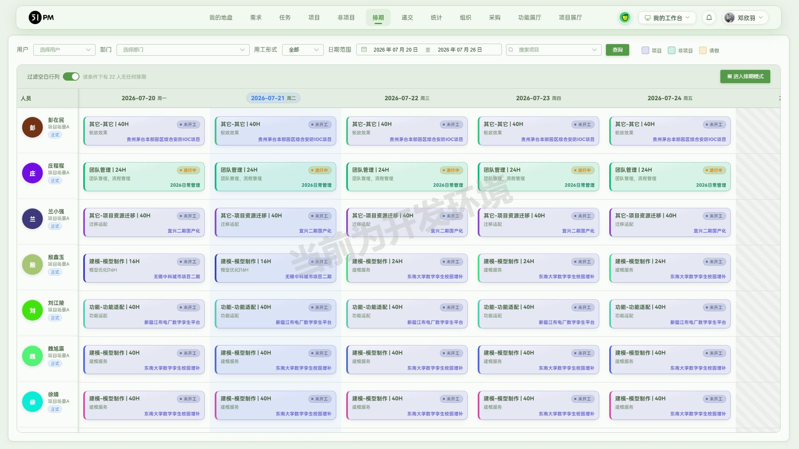
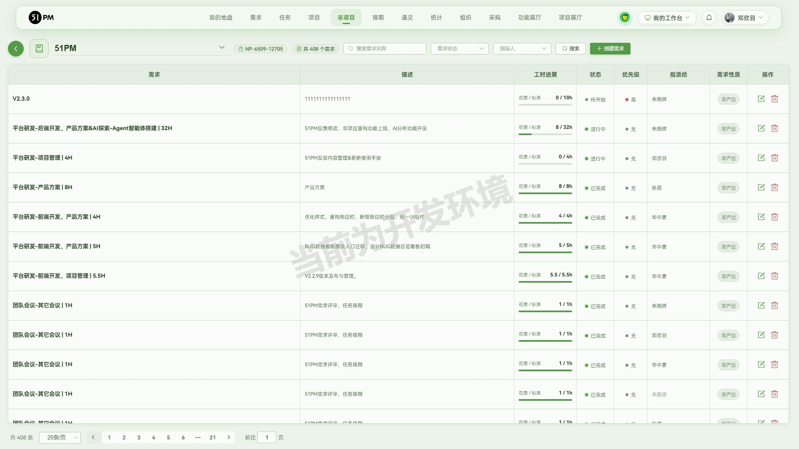
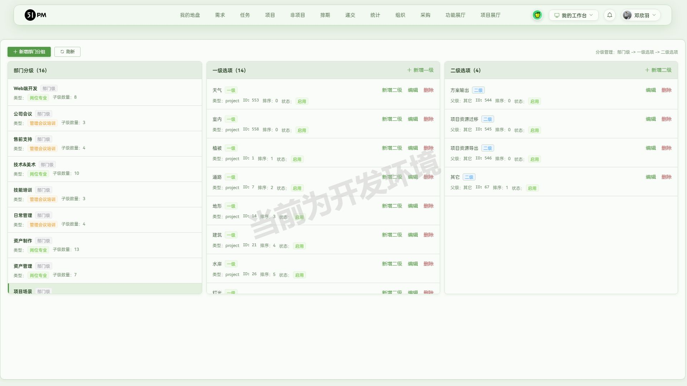
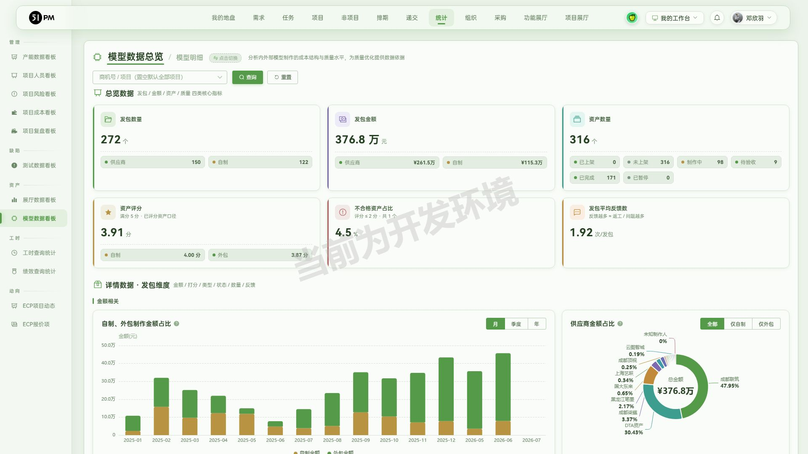
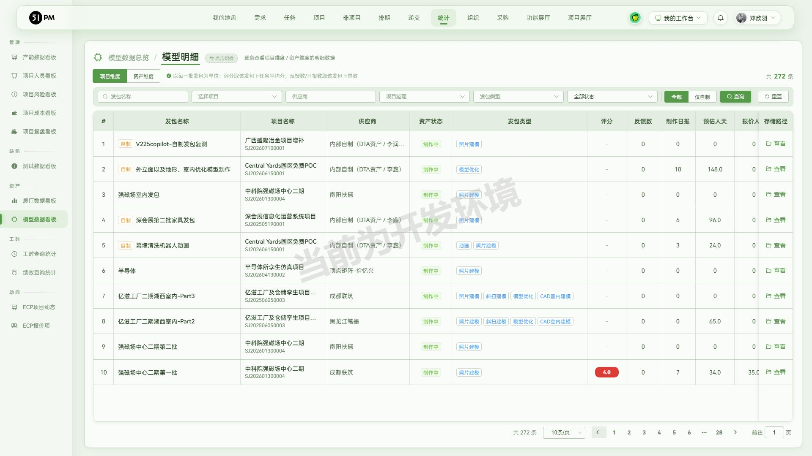
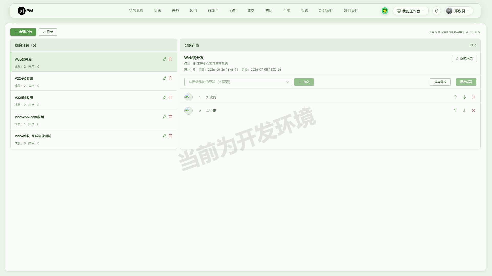
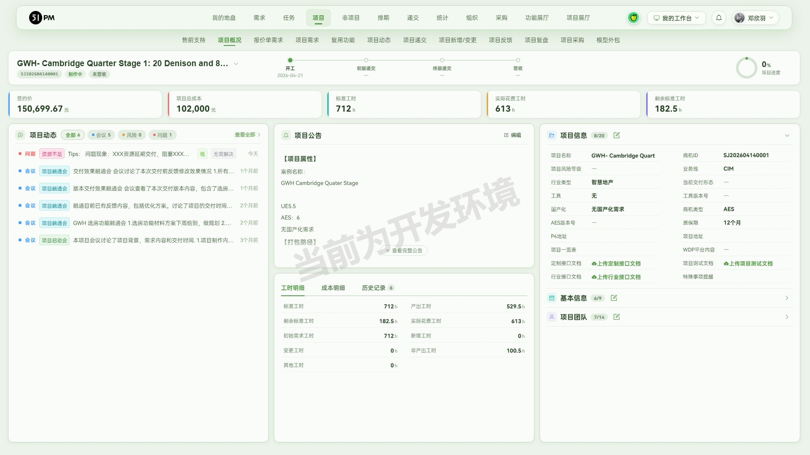
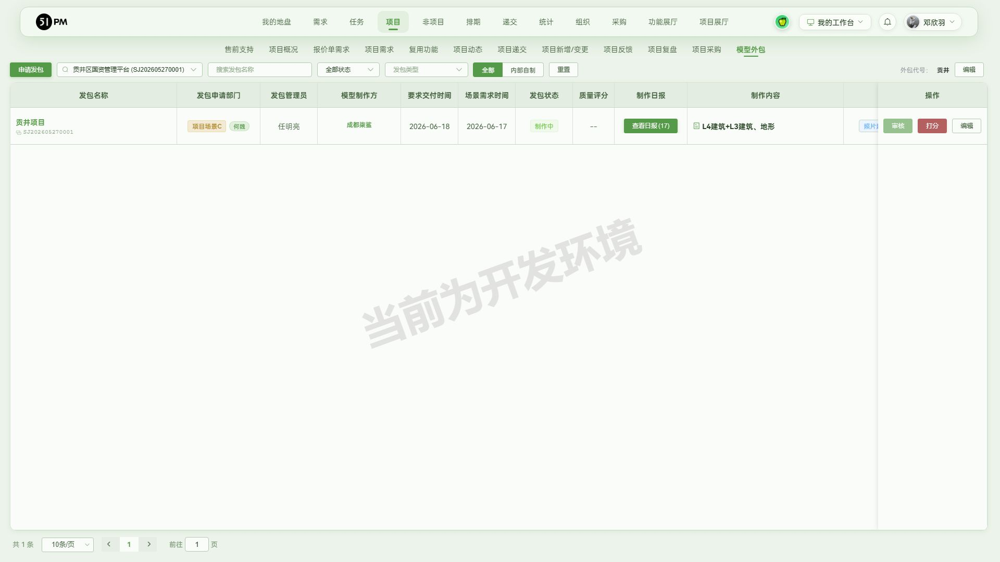
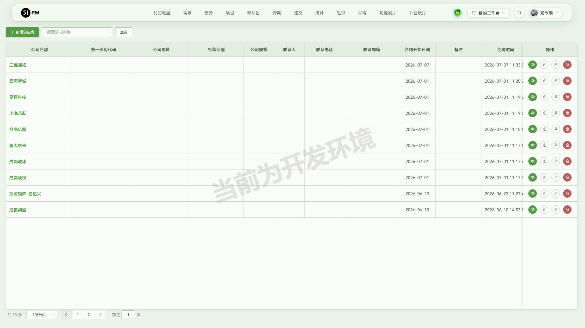

阅读顺序：先看「一、逐需求验收详情」判断本次交付达标与否 →「二、缺陷」「三、风险」是待处理项 →「四、发版内容（初稿）」→ 回归与接口等测试证据在附录，供追溯，不是验收结论本身。
说明：V2.2.4 为回溯性验收（发生在 V2.2.5~2.2.8 之后），本轮功能中的模型外包子流程、模型数据看板等在后续版本有增量细化，本报告聚焦 V2.2.4 开发内容本身是否达标。
以下是 v2.2.4 的开发内容：
- 排期表（体现到发版，全员，痛点解决对象是 TB）：新增"过滤空白行列"筛选条件，过滤无排期人员，避免查看某项目排期时出现大量空白。
- 非项目任务创建、排期（体现到发版，全员）：仅支持在子需求下创建任务，规范需求选择范围，防止成员创建任务时错选需求或在根需求下创建任务。
- 任务选项下拉框：新增 1、项目场景-其他-项目资源迁移，2、项目场景-其他-项目资源导出。
- 统计-模型数据看板：新增模型数据总览、模型明细。
- 组群创建（体现到发版，全员）：在我的工作台新增组群配置功能，支持同时创建多个人员群组，并在创建任务时快速导入群组成员。
- 项目概览（体现到发版，QA\PM\TB\BD）：新增项目测试文档的入口，提供上传、编辑、下载功能（注意不需要传入链接到该入口，仅截图表示存在即可）。
- 模型外包：新增模型外包-供应商全流程开发，将外包业务全生命周期统一收敛到"场景组-DTA-供应商"业务流程（场景组：项目发包、结项；DTA-PM：供应商账号管理、发包立项；DTA-管理员：审核发包、任务创建、查看反馈&日报、创建反馈、反馈验收；供应商开发者：账密登录、查看项目列表、填写任务、反馈交付）。
对应关系：需求 1 → §1，需求 2 → §2，需求 3 → §3，需求 4 → §4，需求 5 → §5，需求 6 → §6，需求 7 → §7。
/schedule/schedule_table），工具栏左侧「过滤空白行列」开关。/not_project/not_project_demand?not_projectId=N）。project_not_task/get_demand_list?project_id=
返回需求列表含 pid/p_level
层级字段，为"仅子需求可建"提供后端依据。pid 均为
0（扁平且各自挂任务），未找到"根需求带子需求"样本，无法验证根需求上创建入口是否被禁用（覆盖盲区
R2）。/task_option_config），部门分级「项目场景」→
一级「其它」→ 二级选项；实际使用见任务创建的任务选项下拉。index/get_task_options 结构
data.data[].task_options[].children 中，项目场景 → 其它(66)
下确认 项目资源迁移(value 545)、项目资源导出(value 546)。/statistic/outsource_panel），页头「模型数据总览
/ 模型明细」切换。outsource/get_data_overview、get_package_dimension_list（发包明细）正常；get_asset_dimension_list（资产明细）负
limit → HTTP 500（缺陷 B1）。/user_custom_group_config）；导入「非项目 →
需求 → 打开任务 → 创建任务 → 多人通用任务 → 从组群导入」。UserGroupImportPopover.vue）下拉列出当前用户的全部自定义组群及各自成员数。/project/project_detail?projectId=N）右侧「项目信息」栏。/project/outsource_project?projectId=N）；供应商账号「我的工作台
→ 供应商企业管理」（/supplier_manage）；供应商门户
/supplier_portal/login。v224supplier 真登录门户后可见项目/发包/任务/任务详情。outsource_project /
outsource_detail 路由正常；供应商门户走独立
supplier_api/*（跨域 CORS 证明独立后端，主站 token
无法直调）。只放已确认、无需产品拍板就必修的（含 console 红错等技术缺陷）；拿不准/待拍板的进 §三。
| # | 缺陷 | 严重度 | 现场 / 证据 / 复现 | 建议 |
|---|---|---|---|---|
| B1 | 模型明细·资产维度接口
outsource/get_asset_dimension_list 传负 limit 触发 HTTP
500 |
轻微 | 直调接口 limit=-1 返 500 服务端异常（slice
panic）；同版同类的发包明细 get_package_dimension_list
相同入参却返 code 52 优雅校验——两姊妹接口参数校验不一致 |
资产明细接口对 limit 补齐边界校验（负数/超限返 code 52 而非 500），与发包明细对齐；UI 正常不发负 limit，属健壮性技术缺陷 |
与缺陷的区别：不是已确认必修的 bug，而是需产品/后端确认口径、或本轮没覆盖到的盲区。
| # | 事项 | 等级 | 建议 |
|---|---|---|---|
| R1 | 模型数据总览"资产状态四档"（制作中 98 + 待验收 9 + 已完成 171 + 已暂停 0 = 278）≠ 资产总数 316，差 38（疑缺"未开工"档），口径待确认 | 中 | 请产品/后端确认资产状态是否漏"未开工"等档位，或明确 316 与四档之和的口径差异（与 V2.2.8 已记录的同类现象吻合） |
| R2 | 需求 2「根需求下禁止建任务」未能直接复现——测试库非项目 6839 的需求全为扁平（pid=0），无"根需求带子需求"层级样本 | 中低 | 补建一个含子需求的非项目层级样本，复验"根需求上无创建入口、子需求上有"；或由开发确认前端禁用逻辑 |
| R3 | 供应商全流程"结项(确认结项)"未在本验收项目上强制执行——结项为项目生命周期末端（开工→初报递交→终报递交→整报→结项）动作，本验收项目刻意停在中途（任务待开始/发包制作中，未伪造供应商日报/交付/开工递交） | 中低 | 结项入口已核实；如需完整闭环，可在一个走完开工→递交→整改的项目上补验"确认结项"，避免在半成品项目上伪造完整状态 |
未覆盖盲区声明：
供发版管理套用；发布记录表与最终定稿由用户在发版管理中维护。
强度较大，新增模型外包供应商全流程、模型数据看板、创建人员群组与项目测试文档，并优化排期过滤、非项目任务创建规范与任务选项。
需关注人员：场景组、DTA、供应商
1.「模型外包-供应商全流程」：（外包业务全生命周期统一管理） 支持将外包业务按"场景组-DTA-供应商"统一收敛管理：场景组可进行项目发包、结项，DTA-PM 可管理供应商账号并发包立项，DTA-管理员可审核发包、创建任务、查看反馈与日报、创建反馈及反馈验收，供应商开发者可通过独立门户账密登录、查看项目列表、填写任务并交付反馈；
需关注人员：DTA、管理层
2.「统计-模型数据看板」：（掌握模型发包与资产全景） 支持模型数据总览，汇总发包数量、金额、资产与评分等指标；支持模型明细，按项目维度与资产维度查看明细数据，方便掌握模型外包整体情况；
需关注人员：全员
3.「我的工作台-创建人员群组」：（快速复用常用人员组合） 支持创建并维护多个人员群组，并在创建任务时快速从群组导入成员，方便批量指派任务；
需关注人员：QA、PM、TB\BD
4.「项目概览-项目测试文档」：（集中管理项目测试文档） 在项目概况信息栏新增项目测试文档入口，支持上传、编辑、下载项目测试文档；
需关注人员：TB、全员
1.「排期表」排期筛选项目后，支持过滤无排期人员，方便 TB 查看实际排期内容；
2.「非项目任务」任务创建收敛为仅支持在子需求下创建，规范需求选择范围，避免创建任务时错选需求或在根需求下创建；
3.「任务选项」项目场景-其它 下新增"项目资源迁移""项目资源导出"两个任务选项；
阶段 1 全量回归：41 通过 / 2 跳过 / 6 失败。6 项失败经逐条核对 error-context 均为「测试库刷新致数据缺失」，非真回归 BUG，按铁律标注跳过、不重建不复跑：
| 失败用例 | 归因 |
|---|---|
| api-v2.2.3 反馈相关（#488/#489） | 测试库反馈数据已清 |
| v2.2.5 ①④ 项目需求页 | 需求行数据缺失（需求已清） |
| v2.2.6 ③ 项目文档位 | 项目数据缺失 |
| v2.2.6 ④ 会议动态（#6712） | 会议动态被清 |
| v2.2.7 ③ 需求任务（#6690 需求 #47294） | 需求数据缺失 |
结论：✅ 无真回归。
regression/tests/api-v2.2.4.spec.js（不开浏览器，秒级）：index/get_task_options（含
545/546 断言）、outsource/get_data_overview
边界、get_package_dimension_list 负 limit code
52、get_asset_dimension_list 负 limit → 500
作哨兵（test.fail）。regression/tests/v2.2.4.spec.js（数据相关部分用
test.skip 软失败而非硬断言）。组群：新建分组「V224验收-组群功能测试」（我的工作台 → 组群配置，测试环境，供下轮组群导入用例作前置）。
供应商全流程走查（§一.7）产生的写入实体（均带 V224 前缀标识，不清理，供回归引用）：
| 实体 | 名称（#ID） | 关键字段 |
|---|---|---|
| 项目 | V224验收-供应商全流程测试项目（projectId=6882） | 商机号 V224-SUP-20260721 |
| 供应商企业 | V224验收测试供应商（companyId=15） | 信用代码 91110000TEST202607X，联系人 测试联系人/13800000000 |
| 供应商账号 | v224supplier（姓名 测试供应商开发） | 登录 /supplier_portal/login |
| 发包 | V224供应商发包-测试（outsourcePackageId=662） | 照片建模/UE5.5/¥10,000/5人天/交付 2026-08-15 |
| 任务 | V224测试资产-楼栋A | 初始需求/待开始/开发者 测试供应商开发 |
| 反馈 | 材质模块反馈（已验收） | 关联 楼栋A，提交人 邓欣羽，2026-07-21 18:08:47 |
该项目刻意停在中途（任务待开始/发包制作中，未伪造供应商日报与交付），“确认结项”未强制执行（见 §三 R3）。
其余为只读探索，无新增业务实体。








